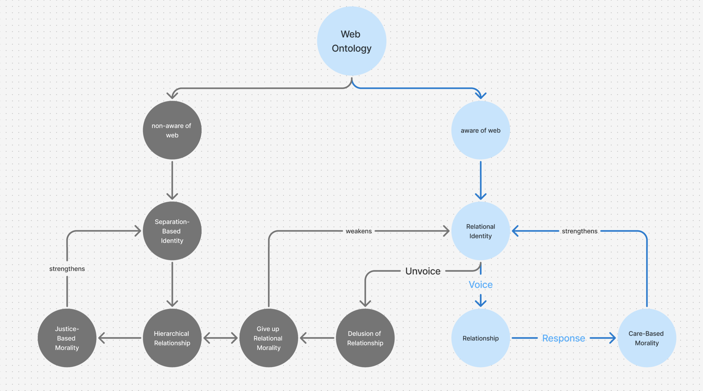
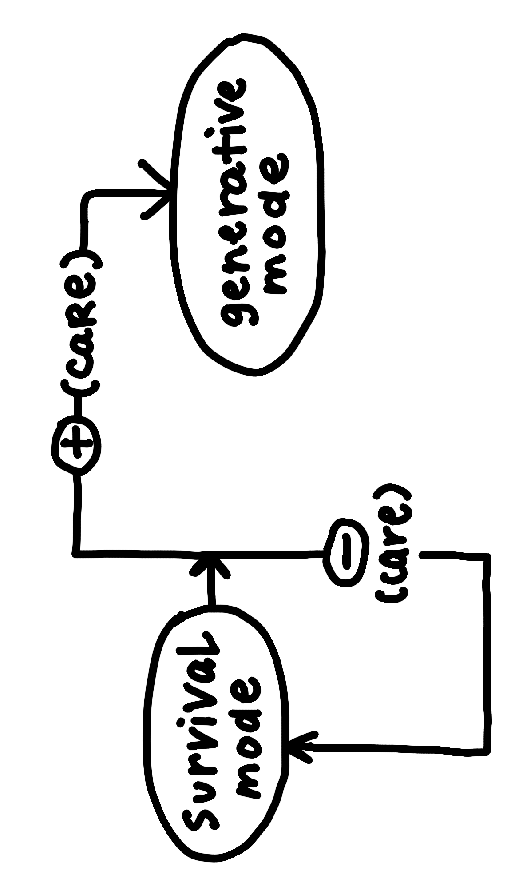

「もつれる」プロジェクトを見てみたい
八木翔太郎
第4回 Life of Meaning
前号では微生物を通じてシンポイエーシス (共創生) とは何かのイメージを深めた。個体はオートポイエーシス (自己創生) することで存続し得ているが、その「自己」という境界はそれほど確固としたものではないのではないか。ハラウェイやマーギュリスらが示したように、伴侶種 (ペット) や微生物の生き様はそんな境界を容易く破ってしまっている。彼らは環境や状況に対して驚くべき適応性を見せるのであり、自然淘汰論が説明するように数世代を待つ必要性がないことを示してくれている。では、こうした適応性はどこまで広がっているのだろうか。
カナダの生物学者ブライアン・グッドウィンは、生命現象の基底を DNA に求める還元主義が台頭する中で、見落とされてきた観点を拾い集めた研究者である。彼は、いかに生物学が DNA 中心のパラダイムを築き上げ「生物」のない学問を生んでしまったかを批判しつつ、「生命の意味」を探究する中で新たな視座を手に入れている。 著書「Nature’s Due」の挿話を要約して象徴的に紹介しよう。
あるところに「生命の意味」を探究している養蜂家の子供がいた。彼は、蜂を家族のように世話する母親の息子として生まれ、次第に蜂が巣の中や周辺の環境との間に完璧な調和を生み出している様子に魅せられるようになっていく。ある猛暑日に蜂がどのように対処するのかを観察していたところ、彼は聞き慣れない音に気が付いた。なんと巣の中にいた千匹もの蜂たちが一緒に羽ばたいて自らをあおいでいたのである。風を流すために重厚に奏でられる羽音のハーモニーを聴きながら瞑想していた彼は、ふと「生命の意味 (Meaning of Life) 」ではなく「意味の生命 (Life of meaning) 」とは何かを問うべきなのではないかと悟る。そしてその「意味」とは「何を成すかではなく、自然や他の存在たちと調和的に在る営みそのもの」なのだと。以降、その息子は迷った時には蜂の歌を口ずさみながら心の声に従ったのだという。
ここで「意味」は言語使用をする人間に閉じられた概念ではない。意味を得ているというのは環境と調和していることなのである。「意味の生命」という表現は、生物が環境と切っても切り離せないことを強調している。
グッドウィンは還元主義的な生物学に抗うように解釈学的生物学を擁護する。実際、生物の発現は DNA だけで定まるものではない。例えるならば、DNA は辞書 (レシピではなく！) 、タンパク質は言葉、調整・代謝機構は文法であり、細胞は物質化されたパロール (発話行為) を構成しているのである。細胞は時間と空間の制約の中で環境からのインプットのもと手元の類義語辞典を解釈しているのであり、同じ DNA から複数の表現型が生じうる。ソシュールの言語学になぞらえるならば、生物学は辞書 (ラング) から語り (パロール) の研究へと焦点を移す必要があると考えられるだろう。
しかし、小さな解釈の違いが大きな発現の違いを生むのはなぜだろうか。その鍵はカオスから秩序が生まれる臨界現象にある。臨界状態において状態が遷移するときに、そのシステムはどの角度からもフラクタルに同じ形をとり冪乗則 (Power Law) に従った性質を示すのである。生命を含めたあらゆる自己組織化している秩序 (イギリスの海岸線、月の表面、地震の確率分布なども) はこの冪乗則を有していることが知られているが、それは臨界状態に平衡していることを示唆している。では一体なぜ有機体はこのような状態にあるのだろうか。
グッドウィンは、この理由を量子コヒーレンスに求めている。このときに「局所的な自由とマクロな凝集力 (cohesion) 」を最大化する量子の性質 (ジャズプレイヤーが自由に演奏しながらバンド全体として秩序ができている様子と喩えられる) が現れるのであり、遺伝学者のメイワン・ホーは有機体を「コヒーレンスかシステム臨界点をアトラクターとして持つような量子重ね合わせ状態」であると説明している。
しかしながら、還元主義的な科学文明により人間社会はこうした調和から疎外されてしまっている。彼はわれわれ1人1人がその場で「最小作用の原理に好ましく、関与する要素の只中にある感情から湧き出るような自然秩序はあるか」と自問すべきだと提案している。「遊び」はそれを体現する方法の1つだ。これによって人はローカルに解釈して活動しながら一貫した全体を創り出すことができるのである。
有機体はモノからガイアに至るまで秩序立っている。シンポイエーシスについてグッドウィンは直接言及はしていないが、それは人が忘れてしまった生命の作法の別名なのではないか。グッドウィンは「生命の意味」ではなく「意味の生命」を探求した。われわれも「プロジェクトの適応性」ではなく「適応性のプロジェクト」へと発想を転換できるかもしれない。いずれにせよ量子力学にはもう少しヒントがありそうだ。次回はこれを題材に関係性の社会学を切り開いたカレン・バラッドの議論を覗いてみたい。
THE ARCHITECTURE OF INTIMACY
Intimacy: Site of Danger or Protection?
Kitty Gia Ngân
In 1982, Gilligan and Pollak conducted studies using the TAT (Thematic Apperception Test) to analyze subconscious narratives of 138 college students. Their research found that when men were shown an image of a peaceful couple by a river, over 20% imagined violence—murder, kidnapping, or betrayal. Not a single woman did. Instead, women perceived danger in images depicting success, where a person stands alone. This suggests a tendency for masculine-coded perspectives to perceive relationships as threats, whereas feminine-coded perspectives experience separation and individualist achievement as danger.
Danger in Affiliation: Male 26% - Female 0%, Danger in Achievement: Male 1% - Female 12%
Rather than debating on sex difference, what I want to emphasize here is that there are ontological differences which determine whether a person perceives danger or safety in intimacy, thus, the strategies that such individual will adopt in life.
In journal 15, I wrote about In/Visibility as a site of Resistance, Negotiation, and Care within the Architecture of Intimacy. But such a statement comes from an assumption of ontology where intimacy is a site of safety rather than danger. In the world we are living in, the contrary may be the dominant narrative in many societies, where intimacy (i.e. connectedness and care) is a site of danger, and separation (i.e. autonomy and boundary) is our protection.
Is intimacy a site of danger or protection? I will discuss this question through the lenses of:
- Epistemic In/Visibility
- Ontological In/Visibility
- Generational In/Visibility
Thus, offering the first patterns for intimacy.
1. EPISTEMIC INVISIBILITY
Sociopsycho Development: Maturity Through Separation or Affiliation?
The normative sociopsycho development model—rooted in Western, masculine-coded theories—emphasizes individuation, autonomy, and differentiation as markers of maturity. Figures like Erik Erikson, Sigmund Freud, Jean Piaget, and Lawrence Kohlberg shaped this framework, where selfhood is measured by one's ability to separate from others and each relationship is placed within a hierarchical order. (Theme: decolonization)
Within a hierarchical ordering, relationships are placed within the zero-sum game, making intimacy more likely to be a site of danger & competition rather than safety & support.
Carol Gilligan critiqued this assumption of universality, recognizing another model of identity that's based on relations, care, interdependence, and response-ability (In a Different Voice, 1982). Instead of defining selfhood through separation of one's ego, a relational perspective frames identity through relationships—not as a hierarchy, but as an interconnected web that extends to the margins.
However, dominant psychology misinterprets relational identity as weaker selfhood, thus, morality, reinforcing a bias that devalues relational ways of knowing in institutions like school, corporate structures, and law. The masculine-coded model remains the standard, shaping literature, media, and historical narratives, such as the Buddha’s story and the Hero’s Journey. While valid, they don’t represent universal developmental experiences, and treating them as such renders alternative developmental paths "deviant" or inferior.
2. ONTOLOGICAL INVISIBILITY
When Voice = Relationships = Morality.
Gilligan (1982) recognized an alternative mode of identity formation and morality—one rooted not in separation but in an ontology of relations and interconnectedness. Within this framework, morality is not a system of judging right and wrong (like how it has been defined in normative models) but as an awareness of connection and responsibility:
"Her world is a world of relationships and psychological truths where an awareness of the connection between people gives rise to a recognition of responsibility for one another, a perception of the need for response." (Gilligan, 1982)
Since morality is based on relations, self-invisibility (losing one’s voice) means disappearing from relationships thus refusing both relational morality and responsibility:
"To give up their voice is to give up on relationship and also to give up all that goes with making a choice." (Gilligan, 1982)
Choosing Unvoice = No Relationship = Relational Immorality.
 Relational-Based Identity -> Care-Based Morality">Awareness of Web -> Relational-Based Identity -> Care-Based Morality
"To have a voice is to be human. To have something to say is to be a person. But speaking depends on listening and being heard; it is an intensely relational act." (Gilligan, 1993)
Although self-invisibility blocks intimacy & relationality, historically, when unheard (e.g. discrimination, persecution, being neglected & dismissed), many would choose an "illusory intimacy" at the cost of voice. Invisibility becomes a survival strategy. Techniques like dissociation, masking, and self-erasure—whether emotionally, physically, or socially—serve as protective mechanisms in navigating hostile environments.
The illusion of intimacy/relationship is a kind of "shame-based intimacy"—where connection is forged NOT out of genuine mutuality, but out of a fear of abandonment and an inability to see oneself clearly. As the result, erasing a whole person/ontology.
3. GENERATIONAL INVISIBILITY
The Legacy of Silence: How Invisibility Shapes Knowledge and Generativity
When a survival strategy of invisibility is passed down through generations due to histories of domination, war, and systemic oppression, it extends into what I call generational invisibility.
In terms of sociopsycho development on a generational scale, I want to introduce Erikson (1950)’s concept of generativity: A person's willingness to contribute to future generations through care and responsibility is called "generativity", which is a form of knowledge transmission and generational meaning-making. Jean Baker Miller (1976) expands on this by framing care as the bridge between survival and generativity.
 if (+) care -> Generative Mode">Survival Mode -> if (+) care -> Generative Mode
However, when there is a generational invisibility, generative epistemic development is disrupted, creating a fragmented knowledge system that cannot integrate all patterns of knowing: Empirical Knowing (factual), Personal Knowing (from self-understanding & empathy), Ethical Knowing (morality), Aesthetic Knowing (awareness of the here & now) (Carper, 1978), and Emancipatory Knowing (critical awareness of power, oppression, and social justice) (Chinn & Kramer).
Over time, suppressed histories and silenced identities create generational epistemic gaps, where the inability to recognize or trust one’s own knowledge limits the capacity for history-making, truth-seeing, thus, change. Without visibility, truth remains inaccessible; without truth, generativity is stifled—leaving only survival in its place.
Generative Framework within Web-Based Ontology
Recognizing that epistemic, ontological, and generational visibility shape our capacity for connection, alongside identity, knowledge, and generativity, we must move beyond fragmented experiences of intimacy toward a systemic framework: an Architecture of Intimacy that actively promotes safety of voice (ie. visibility), thus sustaining diverse ontologies and multitudes of truth.
To conclude, my proposal for the first patterns of intimacy are:
- Epistemic Visibility
- Ontological Visibility
- Generational Visibility
Since intimacy within the web-based ontology is a new vision with a lack of existing discourses, seeking for patterns of its architecture in realworld spaces remains an exploration. But a meaningful and worthwhile one.
実践！プロジェクト推進のコツ
定金基
私はこう感じた
チームメンバーと話しづらい。そう感じるときはどんなときだろう。
私が、ある程度の経験があることから、正解めいたものを知っているようにみえている。
その理由から、私から発せられるコメントが、プロジェクトチームのメンバーに対して絶対的な指示のように受け取られることがある。
そんなときは話しづらい。それはなぜか。
本人にとって納得しているものなのかわからないまま、絶対的な指示として吸収されていくからだ。本人はそれで良かったのだろうか。もっとその人の個性を活かし、みんなの卓越性を伸ばすコメントがしたいのに、投げかけられた言葉はすべて絶対的な修正の指示だと思われる。そういう態度をとられると話しづらい。
どうしたらよいのだろう。
色々調べた中で『フィードバックの誤謬 批判も称賛も成長にはつながらない』by マーカス・バッキンガム , アシュリー・グッドールが非常に参考になった。
その記事ではお笑い芸人の面白さは演者それぞれ固有であるというエピソードが書かれた後に、卓越性の性質を以下のように展開している。
卓越性は、それを発揮する人物と密接かつ見事に結び付いているといえそうだ。一人ひとりの卓越性は、唯一無二の形でその人の個性を表現する。つまり我々一人ひとりが卓越性を持つことは容易であり、そこには我々の一番優れた部分が自然に、柔軟に、知的な形で発現する。卓越性を伸ばすことはできるが、強制することはできない。
また具体的に卓越性を伸ばすために以下のアプローチを紹介している。
そこで、相手が示した卓越性に目を留めた時に自分が感じたことを説明するとよい。自分が相手の行動に何を見て、どう感じたかを伝える以上に、確実で信用できることはない。「私はこういう印象を受けた」「あれを見て私はこう考えた」、あるいは単純に「君が何をやってのけたか、わかっていたかい」といった表現を活用しよう。
これらはあなたの反応、すなわちあなたの真実であり、それを細かく説明しても相手を判断、評価、矯正することにはならない。単純に、あなたの目から相手がいましがた世界に残した唯一無二の「痕跡」を見て、それをそのまま相手に伝えているだけだ。そしてこれは判断や評価ではないからこそ、より謙虚でありながら、より強力である。
これらの記述をヒントに何かを伝えたいときは「私は〇〇と感じた」と伝えるようにしている。
そのあとに「あなたがこの助言を受け取るかどうかは、自分で判断してくださいね。」と伝えることも多い。
そうするとチームの誰もが無邪気にコメントを交換しやすくなる。
非同期で助言を受け取りやすくなる。問いだけなげて、あとは好きなタイミングで付箋に好きなだけ書いてもらい、付箋が溜まったらそれを読み、受け取るかどうかを決める。この流れで助言が成立する。
では常に卓越性を伸ばすアプローチでよいのだろうか。
岩政大樹 著『FootBall PRINCIPLES サッカーの原則 躍動するチームは論理的に作られる』の中で、著者はチームが徹底 (指示) とバリエーション (卓越性) のどちらが強いのかを述べている。著者の結論としては、ある一定までのレベルのフィジカルや技術までは徹底のほうが強いそうだ。
私の今までの実践知とこのサッカーの結論は同じである。卓越性を高める助言スタイルの採用は状況に合わせて行うべきではある。しかし、最終的には必ず、各個人の卓越性を高めるコミュニケーションでプロジェクトを進めていくほうがよい。そうすることで良いプロジェクトの成果につながっていく。
この記事に対して、私の卓越性を伸ばす助言を皆様からいただければ幸いです。
本文中すべての引用元 『フィードバックの誤謬 批判も称賛も成長にはつながらない』by マーカス・バッキンガム ,アシュリー・グッドール
ハーバード・ビジネス・レビュー 2019年10月号
WHAT’S LOVE* GOT TO DO WITH IT?
Queer Manifesto of Love
Kitty Gia Ngân
I first had a desire to create a futuristic manifesto of love, written from the future and drifted to the past which is our present. The reader will have to use a dice to read/play it. The manifesto has rituals, prompts, and a role-playing mechanism. Of course, it will be written in, passed on from person to person, group to group. As a living document, it will never be completed or finished, always changing and expanding. That's how I understand the queer-inclusion world and what it is to be a manifesto.
When people talk about love (usually in gossip), I see that people tune-in when "love" is personal and comforting. But when "love" is stretched beyond the personal bubble, or that it requires confrontation, disruption, and uncomfortable witnessing, people quickly tune-out and pull-away. Yet, the practice of love demands all of the above. The personal merges with the political and they entangle, spill over one another.
I used bell hooks' essay, Love As the Practice of Freedom as the foundation for the manifesto zine. I think this zine is not for the faint of heart... Nor is any serious study on love/intimacy suitable for spaces with a lack of courage. Because such a subject matter is deeply piercing: It requires us to face ourselves, continuously and deeply. I hope the manifesto gives people an immersive, participatory, and evolving experience of such a love; That is, only if they actually participate.

{kind=link}
{kind=link}
{kind=link}
{kind=link}